3-Schichten-Architektur, Datenbankmodell und Funktionsweise eines Desktop-Tools fuer OpenHD-/MAVLink-Logdateien.
openhd_flightlog, optional per Docker gestartet
Vom binaeren MAVLink-Log zur strukturierten Datenbankansicht.
OpenHD FlightLog Studio ist eine Desktop-Anwendung zum Analysieren von OpenHD- und MAVLink-Logdateien. Solche Logdateien enthalten rohe binaere Paketdaten. Direkt im Editor sind diese Daten kaum verstaendlich, weil sie aus Headern, Payloads, Checksummen und optionalen Zusatzdaten bestehen.
Das Tool importiert diese Dateien, erkennt MAVLink-v1- und MAVLink-v2-Frames, dekodiert deren Inhalte und speichert die Ergebnisse in einer lokalen MySQL-Datenbank. Danach koennen die Daten in Tabellen angezeigt, durchsucht und teilweise bearbeitet werden.
| Punkt | Umsetzung |
|---|---|
| Anwendungstyp | Desktop-Anwendung |
| UI-Framework | Avalonia UI |
| Programmiersprache | C# auf .NET 9 |
| Datenbank | MySQL openhd_flightlog |
| Datenbankzugriff | MySqlConnector |
| Datenbankbereitstellung | lokal oder automatisch ueber Docker |
Die Software ist nach Darstellung, Verarbeitung und Speicherung getrennt.
Die vorgegebene Architektur teilt die Software in drei Schichten. Diese Schichten muessen nicht als drei getrennte Programme laufen. Entscheidend ist, dass die Verantwortlichkeiten getrennt sind.
Implementiert die Benutzeroberflaeche: Fenster, Buttons, Tabellen, Tabs und Dateiauswahl.
MainWindow.axamlMainWindow.axaml.cs
Bereitet Daten auf, verarbeitet Logdateien, dekodiert MAVLink-Pakete und steuert Abläufe.
MainWindowViewModel.csFlightLogImportService.cs
Speichert persistente Daten, fuehrt SQL-Abfragen aus und verwaltet Transaktionen.
FlightLogDatabase.cs
MySQL
| Schicht | Projektdateien | Aufgabe |
|---|---|---|
| Darstellungsschicht | MainWindow.axaml, MainWindow.axaml.cs | GUI, Tabs, Buttons, Tabellen, Dateiauswahl |
| Datenverarbeitungsschicht | MainWindowViewModel.cs, FlightLogImportService.cs, Parser/Decoder | Importsteuerung, Parsen, Dekodieren, Daten vorbereiten |
| Datenhaltungsschicht | FlightLogDatabase.cs, MySQL | Schema, SQL-Abfragen, Transaktionen, Speichern und Laden |
Die Klassen sind so getrennt, dass jede Schicht eine klare Aufgabe hat.
Die View ist die grafische Oberflaeche. Sie zeigt Daten an und nimmt Benutzeraktionen entgegen. SQL-Abfragen oder MAVLink-Dekodierung finden dort nicht statt.
MainWindow.axaml: Layout mit Buttons, Tabs, DataGrids, Statusleiste.MainWindow.axaml.cs: Avalonia-spezifische Dateiauswahl.Diese Schicht enthaelt die fachliche Logik. Nach dem Umbau liegt die Importlogik nicht mehr in der Datenbankklasse, sondern im FlightLogImportService.
MainWindowViewModel.cs: Commands, UI-Zustand, Auswahlreaktionen.FlightLogImportService.cs: Datei lesen, Frames parsen, Felder dekodieren, Importdaten vorbereiten.MavlinkParser.cs: MAVLink-v1/v2-Frames aus Bytes extrahieren.DynamicMavlinkDecoder.cs: Payloads mit gespeicherten Definitionen dekodieren.OsdReplayService.cs: OSD-Replay-Daten aus Logvariablen berechnen.FlightLogDatabase.cs ist fuer MySQL zustaendig. Die Klasse erstellt Tabellen, laedt Daten, speichert vorbereitete Importdaten und nutzt Transaktionen.
SaveImportedLog.Das Tool ist Viewer, Parser, Decoder und Datenbankanwendung zugleich.
.oLog, .tlog, .bin und .mavlink importieren.0xFE erkennen.0xFD erkennen..debug.jsonl nutzen.payload_hex erhalten.Der Import zeigt das Zusammenspiel der drei Schichten.
Import Log.FlightLogImportService.MavlinkParser auf.DynamicMavlinkDecoder dekodiert die Payloads.FlightLogDatabase uebergeben.Die Datenbank speichert Logs, Messages, Felder, Definitionen und Notizen.
| Tabelle | Zweck |
|---|---|
log_files | Ein Datensatz pro importierter Logdatei. |
message_types | Normalisierte MAVLink-Message-Typen mit Message-ID, Name und Dialekt. |
mavlink_messages | Ein Datensatz pro erkanntem MAVLink-Frame. |
message_fields | Dekodierte Felder einer Message. |
user_variables | Manuelle Variablen und Notizen. |
message_definitions | MAVLink-Message-Definitionen aus OpenHD-Headern. |
field_definitions | Feldlayout einer Message-Definition. |

Das Diagramm zeigt die Beziehungen zwischen den wichtigsten Tabellen. Die aktuelle Implementierung verwendet MySQL; das Diagramm beschreibt die fachlichen Tabellen und Beziehungen.
Konsistenz, Nachvollziehbarkeit und Performance stehen im Vordergrund.
Die Daten sind stark strukturiert: Ein Log enthaelt viele Messages, eine Message enthaelt viele Felder, und Definitionen enthalten viele Felddefinitionen. Diese Beziehungen passen gut zu einer relationalen Datenbank mit Primary Keys, Foreign Keys und Joins.
Foreign Keys sichern Beziehungen zwischen Tabellen ab. Wenn ein Log geloescht wird, entfernt MySQL die zugehoerigen Messages und Felder automatisch ueber ON DELETE CASCADE. Dadurch bleiben keine verwaisten Detaildaten zurueck.
Beim Import werden viele Datensaetze geschrieben. Eine Transaktion sorgt dafuer, dass ein Import als Einheit behandelt wird. Entweder wird alles gespeichert oder nichts dauerhaft uebernommen.
Indizes beschleunigen typische UI-Abfragen, zum Beispiel alle Messages zu einem Log oder alle Felder zu einer Message.
| Index-Ziel | Nutzen |
|---|---|
mavlink_messages.log_file_id | Messages eines Logs schnell laden. |
message_fields.message_id | Felder einer Message schnell laden. |
message_fields.field_name | Felder nach Namen filtern oder sortieren. |
field_definitions.definition_id | Felddefinitionen einer Message-Definition laden. |
Das Feld raw_packet_hex speichert das originale MAVLink-Paket als Hex-String. Das hilft beim Debugging und macht die Dekodierung nachvollziehbar.
Warum Avalonia, Docker und MySQL fuer dieses Projekt sinnvoll sind.
WinForms ist stark Windows-orientiert. Avalonia funktioniert plattformuebergreifend und unterstuetzt moderne XAML-aehnliche Oberflaechen, MVVM und Data Binding.
XAMPP ist vor allem fuer PHP-/Webprojekte gedacht und bringt Apache, PHP und weitere Komponenten mit. Dieses Projekt braucht nur MySQL. Docker ist deshalb gezielter und reproduzierbarer.
mysql:8.4.openhd-flightlog-mysql.Das Tool arbeitet mit lokalen Logdateien. Eine Desktop-App passt dazu besser als ein Browser-Frontend mit REST-API. Ein HTTP-Backend wuerde Routing, Hosting und zusaetzliche Infrastruktur erfordern, ohne fuer diesen lokalen Analysefall notwendig zu sein.
Das Projekt erfuellt die geforderte Schichtenlogik.
OpenHD FlightLog Studio setzt die 3-Schichten-Architektur innerhalb einer Desktop-Anwendung um. Die Darstellungsschicht ist die Avalonia-Oberflaeche, die Datenverarbeitungsschicht besteht aus ViewModel, Import-Service, Parsern und Decodern, und die Datenhaltungsschicht besteht aus FlightLogDatabase und MySQL.
| Schicht | Umsetzung |
|---|---|
| Darstellungsschicht | Avalonia Views: MainWindow.axaml, MainWindow.axaml.cs |
| Datenverarbeitungsschicht | ViewModel, FlightLogImportService, Parser, Decoder, OSD-Service |
| Datenhaltungsschicht | FlightLogDatabase und MySQL |
FlightLogDatabase und der MySQL-Datenbank. Die Schichten laufen innerhalb einer Desktop-Anwendung, sind aber nach Verantwortlichkeiten getrennt.